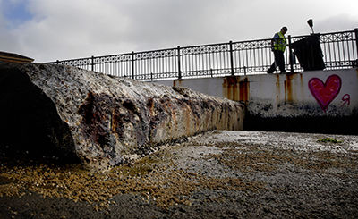
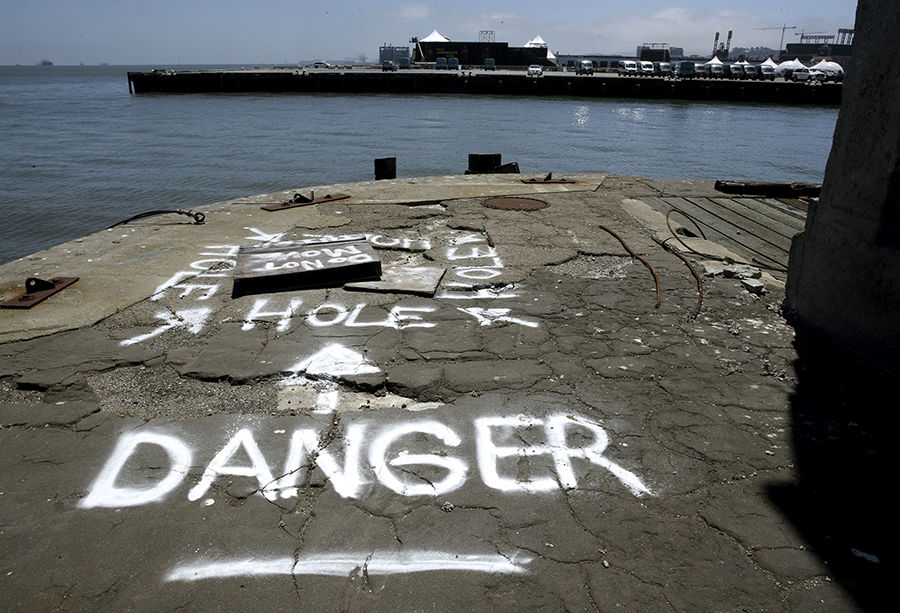
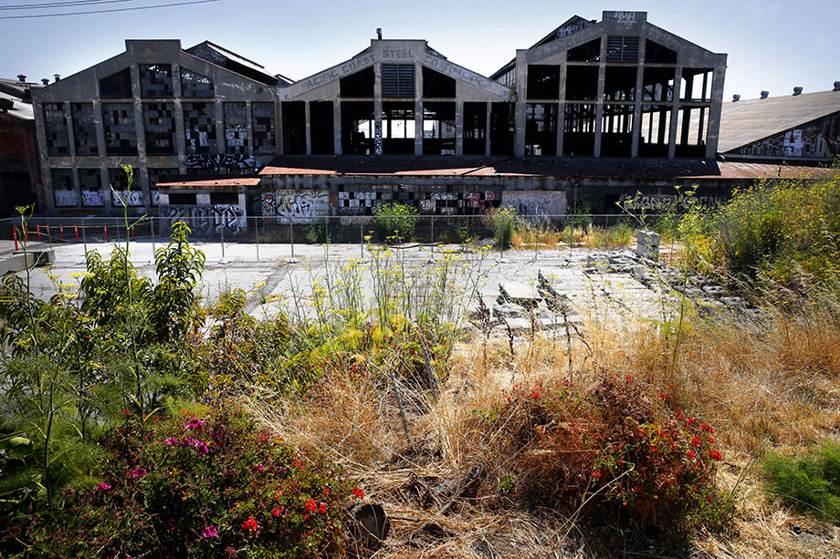
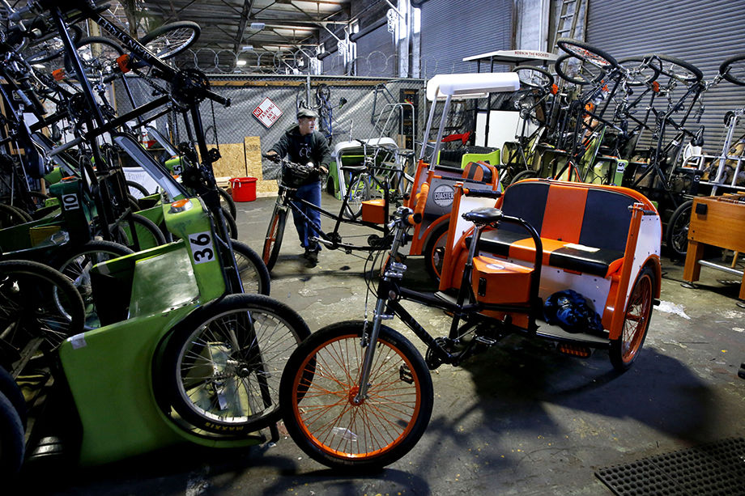
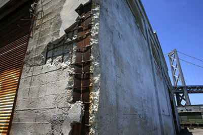

A timeline of the San Francisco waterfront
From working port to the America’s Cup — how today’s Embarcadero came to be

Caption. Photo: Person, The Chronicle
Video: Kim Kenny and Erin Brethauer, The Chronicle

Caption. Photo: Person, The Chronicle
8 spots on Embarcadero reveal changes past, challenges ahead
These eight stops along the Embarcadero give a sense of how it has changed in recent years, the mix of current uses and the dilemmas that lie ahead.

Caption. Photo: Person, The Chronicle

Caption. Photo: Person, The Chronicle
Video: Kim Kenny, The Chronicle

Caption. Photo: Person, The Chronicle